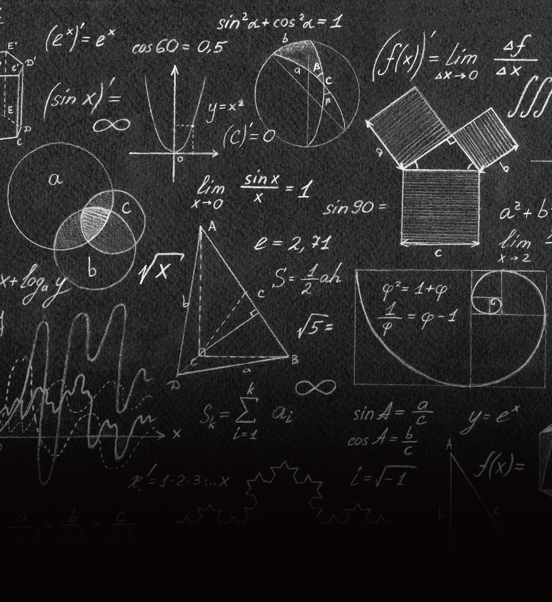

COLLEGE OF NATURAL SCIENCES • 자연과학대학

|
창의성, 논리적 사고, 문제해결 능력
|
|
수학과
DEPARTMENT OF MATHEMATICS
|
|
 math.ssu.ac.kr
math.ssu.ac.kr
|
 02-820-0410
02-820-0410
|
|
학과 설립
1979 년
|
입학 정원
38 명
|
교직과정 개설여부
o
x
|
전임교원
7 명
|
학과 소개
수학과는 순수수학과 응용수학을 전공한 교수진이 주요 교과목을 교육하고 있다.
160여 명의 수학과 학생들은 전공 수업은 물론 최신 설비를 갖춘 전산실습실,
응용 수학연습실, 세미나실에서 튜터링, 스터디그룹, 동아리 활동들을 통해 자신들의
역량을 키워가고 있다. 또한, Towson University 등 해외 대학과의 교류의 폭을 넓혀
가고 있으며, 중등 2급 정교사 양성을 위한 교직 과정도 운영 중이다. 수학과는
수학을 기초로 체계적이고 논리적인 사고능력을 키워 합리적 문제 해결 능력이 높은
리더들을 양성하고 있다.
학과 인재상
논리적이고 합리적으로 문제를 해결할 수 있는 인재
주요 커리큘럼
미적분학, 프로그래밍 및 실습, 물리 및 실험, 화학 및 실험, 통계학
선형대수, 해석학개론, 미분방정식, 정수론, 집합론, 기하학
수치해석, 고급해석학, 복소수함수론, 위상수학, 현대대수, 미분기하학
응용선형대수, 조합론, 수리통계학, 수학사, 암호학, 금융수학, 응용수학
특강
선택교과 가이드
동아리 및 소모임 소개
시그마: 주기적으로 모여 축구 활동 및 친목 활동을 하는 소모임
힐링: 봉사 활동을 주목적으로 하는 소모임
리치스: 선 후배 간 농구 활동을 통해 친목을 다지는 소모임
학과 특색 프로그램
창의력 교육 학교 기업 현장 실습, 원어민 교수 영어 교실, 컴퓨터 실습실 및 응용 수학
연습실 운영
우수 학생 및 학과 성과
전국 대학생 수학경시대회 은상·동상 수상
교육부장관 기부대상
한국 수학교육학회 공로상(창의력수학교실을 통한 교육기부)
취득 가능 자격증
중등교사 2급 자격증
졸업 후 진로
교수·교사, 연구원, 일반기업, 정보보안, 빅데이터 및 컴퓨터 관련 기업, 금융(은행, 보험,
증권) 관련 업체, 전문자격증(보험계리사, 공인회계사, 세무사), 진학(대학원, 유학)등
동역학, 복소해석학, 생물수학, 감염병 확산 모델링, 최적화이론, 정수론, 디오판토스
기하, 암호학, 편미분방정식, 사교위상수학
Q 수학과는 수학 성적이 우수한 학생들만 지원할 수 있나요?
A
수학과에 수학 성적이 우수한 학생들이 많이 지원하는 것은 사실입니다. 하지만
현대사회는 점차 융합형 인재를 원하고 있습니다. 수학교과에만 몰입한
학생보다는 다양한 학문에 관심을 가지고 노력하는 학생, 특히 인문학적 역량도 갖춘
학생들이 4차 산업혁명 시대를 주도할 융합인재로 성장할 수 있습니다.
수학 교과 외에도 폭넓은 학과 공부와 함께 다양하고 집중적인 비교과 활동을 주도한 학생들이 지원하면 좋겠습니다.